1. Hardware Overview
The display module integrates a 2.8-inch IPS LCD, capacitive touch, ESP32-S3 main control, audio processing, and various peripheral interfaces. Below is the mapping of the physical components on the PCB.

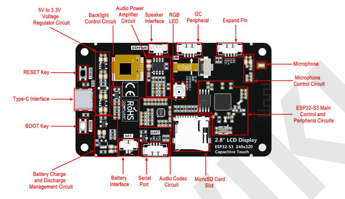
2. Display & Touch
LCD Screen
The display is a 2.8-inch IPS screen driven by the ILI9341V IC with a resolution of 240x320. It connects to the ESP32-S3 using a 4-wire SPI communication interface. The ILI9341 uses 16 bits (RGB565) to control pixel display, supporting up to 65K colors.
Capacitive Touch Screen
The touch interface uses the FT6336G control IC and communicates with the ESP32-S3 via the I2C bus (slave address: 0x38). It connects through a 0.5mm pitch FPC socket using four pins: CTP_RST, CTP_INT, CTP_SDA, and CTP_SCL.
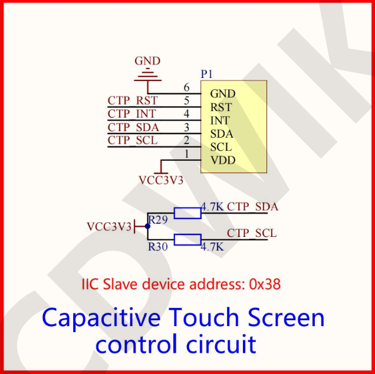
LCD Backlight Control
Driven by a BSS138 N-channel MOSFET. A high level on the LCD_BL pin conducts the drain/source, illuminating the screen. It supports PWM signal input for brightness adjustment.
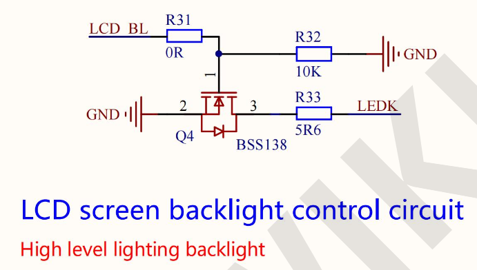
18P LCD Panel Welding Interface
An 18-pin 0.8mm pitch interface that carries the SPI signals, screen voltage pins, backlight circuit pins, and touch signals.
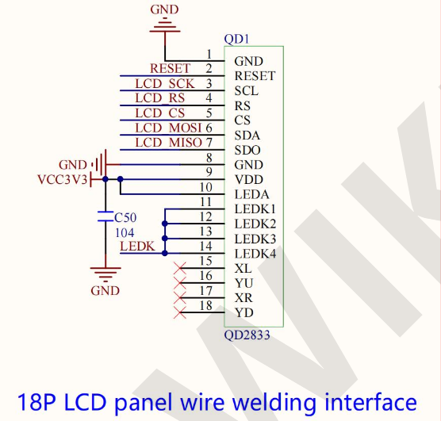
3. Core Controller
The main control chip is the ESP32-S3R8, featuring an Xtensa dual-core 32-bit LX7 microprocessor (up to 240MHz). It includes 8MB of internal OPI PSRAM and connects to an external 16MB QSPI Flash.
- Supports 2.4GHz Wi-Fi and Bluetooth V5.0.
- Equipped with an onboard PCB antenna circuit.
- Utilizes a 40MHz passive crystal oscillator.
- Includes a CLC filtering circuit for analog power.
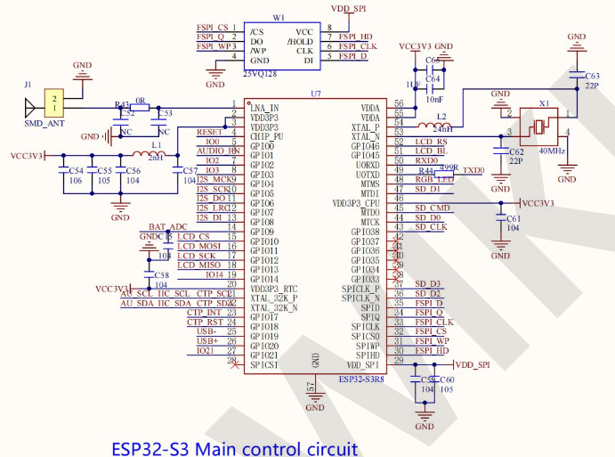
4. Power Management
Type-C Interface
Provides main power (5V), program downloading, and serial communication. Features a Schottky diode to prevent current reversal and static surge protection diodes.
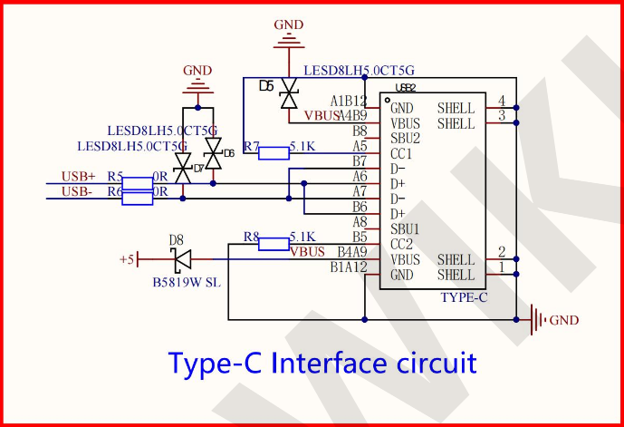
5V to 3.3V Voltage Regulators
Two separate ME6217C33M5G LDOs are used (max 800mA output) to isolate power paths: one exclusively for the audio circuits and one for the rest of the board.
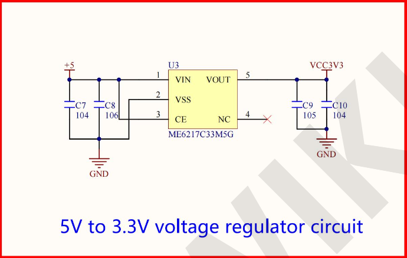
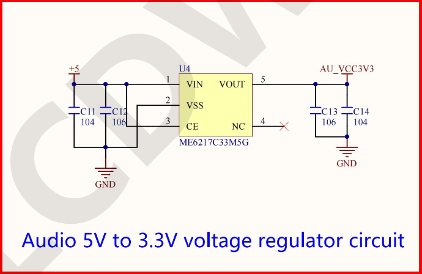
Battery Management (Charge & Discharge)
Controlled by the TP4054 IC. A 2-pin 1.25mm pitch interface allows connecting a battery. The TP4054 limits charging current via a resistor (up to 500mA). A P-channel MOSFET (Q3) cuts off battery power when 5V Type-C power is present.
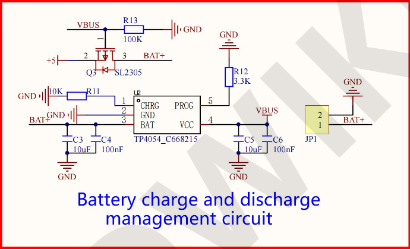
Battery Level Detection
Since the battery saturation voltage (4.2V) exceeds the ESP32-S3's ADC maximum (3.3V), a voltage divider (two 200K resistors) scales the voltage down. The ADC reads this value, which must be multiplied by 2 in software to get the true battery voltage.
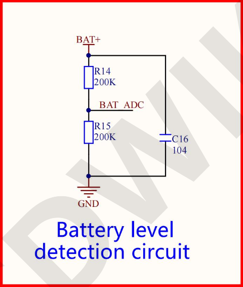
5. Audio Subsystem
Audio Codec (ES8311)
The ES8311 IC handles decoding and encoding. It is configured via I2C (address 0x18) and transmits audio over the I2S bus. It processes incoming MIC signals (via ADC) and outputs audio signals to the amplifier (via DAC).
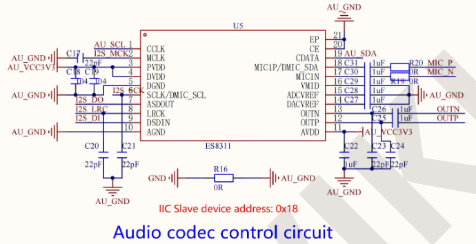
Audio Power Amplifier (FM8002E)
The FM8002E receives differential signals (OUTP/OUTN) from the codec and amplifies them for the speaker. At 5V, it can drive 1.5W (8 ohm load) or 2W (4 ohm load). The volume is controlled by gain adjustment resistors.
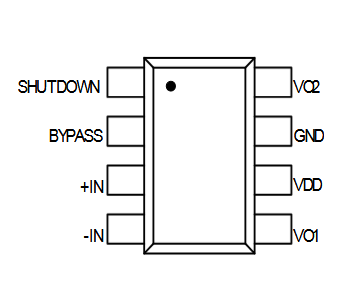
Microphone Control
A bottom-in MEMS silicon microphone is used for audio input. A CLC filtering circuit ensures clean signal transmission to the codec.
MIC marking alongside a small microphone icon/drawing indicating the exact location of the component.
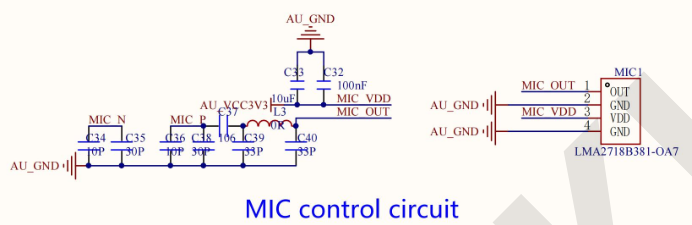
6. Expansion & Interfaces
MicroSD Card Slot
Operates using the SDIO communication method rather than standard SPI, allowing for higher-speed storage access.
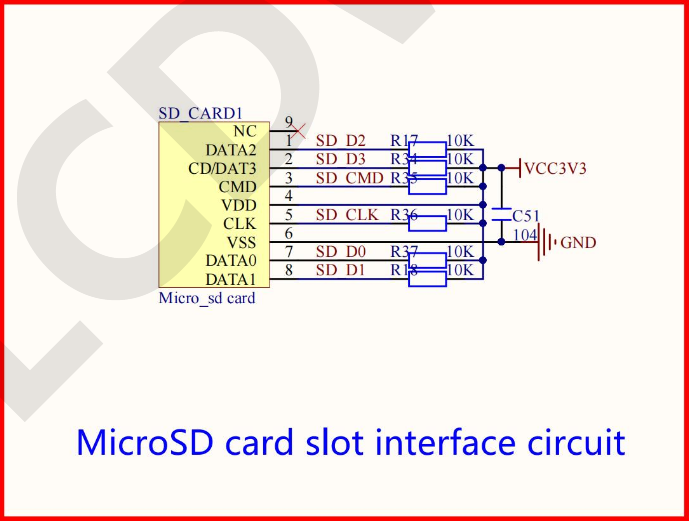
Serial Module (UART)
A 4-pin 1.25mm interface exposing RXD0 and TXD0. Features impedance balancing resistors and an anti-reverse field-effect transistor on the 5V line.
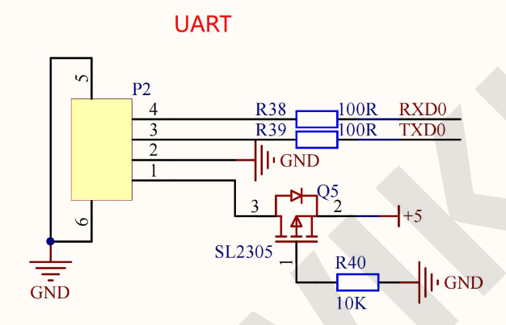
Expanded IO & I2C
Provides a 4-pin interface for general IO (IO21, IO14, IO3, IO2) which can double as an SPI bus, plus a dedicated 4-pin header for the I2C bus (IIC_SDA, IIC_SCL). The I2C pins cannot be used as standard GPIO.
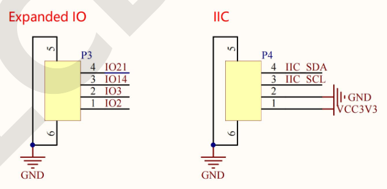
7. Controls & Indicators
Buttons
RESET Key (KEY1): Grounds the reset pin of the ESP32-S3. An RC circuit provides delay to ensure stable resets.
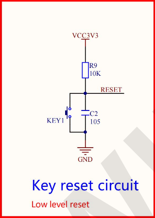
BOOT Key / Download Key (KEY2): Grounds IO0. Holding this while resetting places the ESP32-S3 into download mode. It can otherwise act as a general-purpose button.
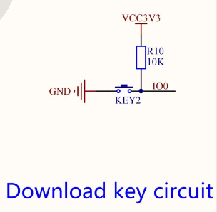
RGB LED (WS2812B)
A built-in tri-color RGB LED utilizing an internal IC. Powered by 5V, it requires only a single IO pin to generate different color output based on timing waveforms.
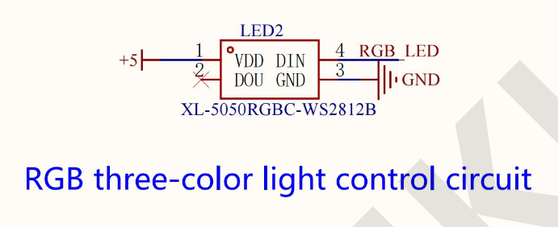